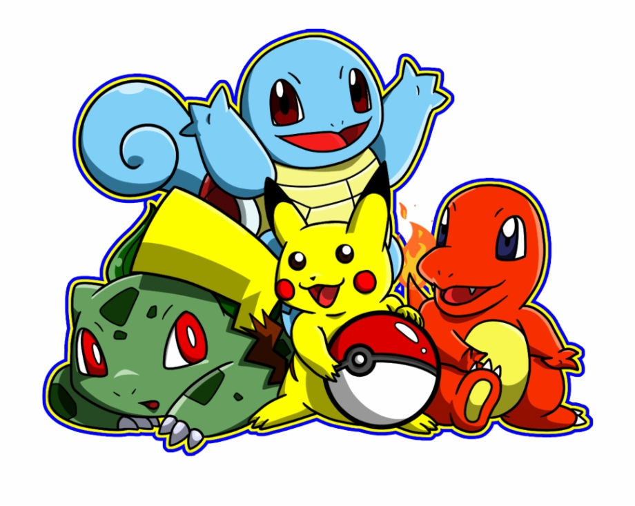
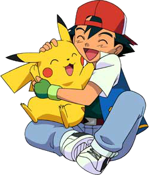
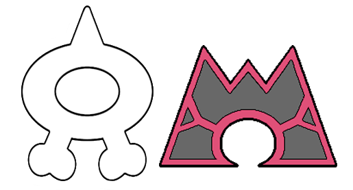
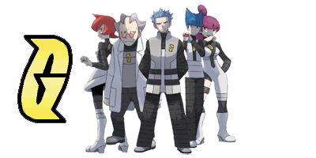
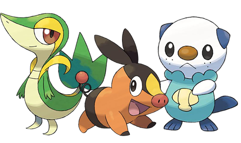
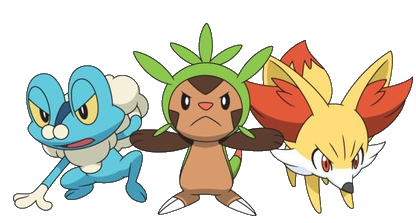
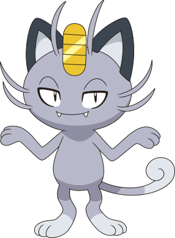
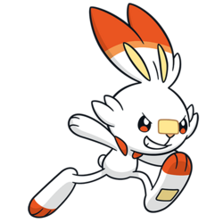
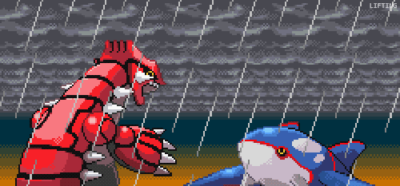

Anime
Pokémon (ポケモン Pokemon?), abreviação do título japonês Pocket Monsters (ポケットモンスター Poketto Monsutā?, lit. "Monstros de Bolso"), e atualmente anunciado em inglês como Pokémon: The Series, é uma série de anime kodomomuke da franquia Pokémon. A série animada Pokémon é dividida em sete séries cronologicamente sequenciais no Japão, divididas pela versão da série de videogames da qual o anime se inspira: a série original (Ouro e Prata), a série Rubi & Safira, a série Diamante & Pérola, a série Preto & Branco, a série XY, a série Sol & Lua e a série Jornadas. Nas transmissões internacionais, essas sete séries são divididas em 24 temporadas separadas. A série de anime Pokémon foi amplamente creditada por permitir que o anime se tornasse mais popular e familiar em todo o mundo, especialmente nos Estados Unidos, onde os dois filmes de anime de maior bilheteria são ambos filmes "Pokémon". Também foi considerado um dos primeiros animes da televisão a alcançar este nível de sucesso com o público ocidental, além de ser creditado por permitir que a série de jogos alcance tal grau de popularidade, e vice-versa.
Enredo
Pokémon: O Início/Ouro e Prata "Temporadas 1-5" (série original) Depois que ele completa 10 anos, Ash Ketchum (Satoshi no Japão) tem permissão para começar sua jornada no mundo dos Pokémon e sonha em se tornar um mestre Pokémon. No dia em que ele receberia seu primeiro Pokémon, Ash acorda em pânico, tendo dormido demais por assistir uma batalha de Pokemón. O Professor Carvalho, o pesquisador local de Pokémon, já doou os três Pokémon iniciais de Kanto (Bulbasaur, Charmander e Squirtle) a novos Treinadores Pokémon quando Ash finalmente chega atrasado ao Laboratório de Carvalho. O único Pokémon que ele deixou é um Pikachu, que ele dá para Ash. Determinado a fazer isso em sua jornada, Ash faz o melhor para fazer amizade com Pikachu, mas ele não confia nele e se recusa a voltar para a sua Pokébola, mesmo atacando Ash com seus poderes elétricos. É só depois que Ash protege Pikachu de um grupo de Spearow irritados que Pikachu percebe o quanto Ash se preocupa com ele, levando-o a salvar Ash. Depois, ambos vêem um Pokémon misterioso e não identificável que estimula os dois a trabalharem para o objetivo de Ash. Ao longo do caminho, Ash faz muitos amigos humanos e Pokémon enquanto ele trabalha no ranque das muitas Ligas Pokémon do mundo. Através da região de Kanto, Ash faz amizade com a treinadora de Pokémon de água e antiga Líder de Ginásio da Cidade de Cerulean, Misty Willams (Kasumi), e o Líder de Ginásio da Cidade de Pewter, Brock Harrison (Takeshi) e durante todo o tempo frustrando os planos do trio Jessie, James e Meowth, e enquanto lida com seu rival de infância, Gary Carvalho, neto do Professor Carvalho, que também é treinador de Pokémon e sempre se mantém à frente dele. Quando o grupo viaja ao sul para as Ilhas Laranja, Brock decide ficar com o professora local, Ivy, deixando Ash e Misty para continuar viajando juntos. Depois de um tempo, eles se encontram e começam a viajar com o Observador de Pokémon e artista Tracey Sketchit (Kenji). Quando chegam a Cidade de Pallet, em Kanto, Tracey decide ficar com o professor Carvalho e Brock se junta ao grupo. Com esta notícia, o trio viajam a oeste a caminho da região de Johto. Em Johto, Ash compete na Liga Pokémon local.
Pokémon: A Série Rubi e Safira "Temporadas 6-9" Quando Ash sai em jornada a sudoeste em direção a região de Hoenn no final da série original, Misty retorna a Cidade de Cerulean em Kanto para se tornar a Líder de Ginásio da Cidade de Cerulean em tempo integral. No entanto, no início da série Rubi & Safira, Brock o segue até Hoenn e Ash ganha novos companheiros na Coordenadora Pokémon May (Haruka) e seu irmão mais novo Max (Masato), e juntos eles enfrentam as equipes rivais, Equipe Magma e Equipe Aqua. Depois de voltar a Kanto e participar do desafio Batalha da Fronteira, Ash luta com seu rival, Gary. Depois de ver Electivire, um Pokémon da região de Sinnoh que ele nunca visto antes, Ash decide viajar para Sinnoh.
Pokémon: A Série Diamante e Pérola "Temporadas 10- 13" No início da temporada, Ash viaja com Brock, uma última vez, em direção ao norte para a região de Sinnoh, com May e Max seguindo seus próprios caminhos. Ash e Brock encontram Dawn (Hikari), outra coordenadora Pokémon, que viaja com eles enquanto eles passam por Sinnoh onde eles devem derrotar Cyrus e sua Equipe Galáctica.
Pokémon: A Série Preto e Branco "Temporadas 14-16" Na série Branco e Preto!, Ash, sua mãe Delia e o professor Carvalho tiram férias na distante região de Unova, onde ele conhece e viaja com uma futura mestre de dragões Iris e o Líder de Ginásio da Cidade de Striaton, Conhecedor Pokémon, e às vezes detetive Cilan (Dent). Durante a jornada, eles descobrem os planos malignos da Equipe Plasma, uma organização criminosa que quer libertar os Pokémon da propriedade das pessoas para que possam governar o mundo sem oposição. Depois de ganhar todos as oito insígnias de Unova, Ash, Iris e Cilan viajam pelo lado leste de Unova para se preparar para o Torneio da Liga Pokémon Unova, após o qual conhecem N, que é fundamental para derrotar a Equipe Plasma. Depois disso, Ash, Iris e Cilan viajam pelas ilhas Decolore antes de Ash voltar para a Cidade de Pallet e conhecer a repórter investigativa Alexa (Pansy), que é da distante região de Kalos. Tendo chegado em Kanto, Iris e Cilan viajam para Johto enquanto Ash e Alexa vão para Kalos logo depois de Ash se reunir com Delia e receber uma nova roupa dela.
Pokémon: A Série XY "Temporadas 17-19" Na série XY, Ash e Alexa chegam na região de Kalos e Ash está ansioso para começar a ganhar suas insígnias de Ginásio. Mas depois que Alexa informa a Ash que sua irmã, uma Líder de Ginásio, está ausente, Ash viaja para a Cidade de Lumiose onde ele conhece o menino-gênio Clemont (Citron) e sua irmã mais nova Bonnie (Eureka), sem saber que Clemont é, na verdade, Líder de Ginásio da Cidade de Lumiose - um fato que ele tenta ao máximo esconder. Ash também se reúne com Serena, uma garota da Cidade de Vaniville que Ash conheceu em sua infância no acampamento de verão do Professor Carvalho em Pallet Town. Durante esse tempo ele a ajudou durante uma situação difícil, e ela tem sentimentos por ele desde então. Depois de viajar com eles para se preparar para o Torneio de Liga de Pokémon de Kalos, Ash concorre e avança até a final, onde ele perde para Alain (Alan), um membro da Equipe Flare. Uma vez que ele descobre suas verdadeiras intenções, no entanto, Alain abandona a Equipe Flare e se junta a Ash e seus amigos para parar os planos da equipe Flare. Despedindo-se de seus amigos em Kalos, Ash mais uma vez retorna a Pallet.
Pokémon: A Série Sol e Lua "Temporadas 20-22" Na série "Sol & Lua", Ash, Delia e Mr. Mime, apelidado de Mime, estão de férias na região de Alola, quando Ash tem um encontro com Tapu Koko, o guardião Pokémon da Ilha de Melemele, que o apresenta a Pulseira Z, um dispositivo que, quando emparelhado com um cristal especial, permite que um Pokémon lance um movimento poderoso quando sincronizado com seu treinador. Isso o leva a ficar em Alola e se matricular na escola Pokémon local. Quando ele decide realizar os testes necessários para dominar o poder do Anel Z, os novos colegas de classe de Ash: Victoria, Lulú , Lillian , Cris e Kiawe decidem ajudá-lo. Equipe Rocket, com James sendo mais decisivo e líder do que na série anterior, também estão nas Ilhas de Alola, e uma piada é que eles se tornaram "adotados" por um Bewear que aparece e os leva de volta para sua caverna, todas as vezes em que são derrotados, ao invés da tradicional conclusão "Equipe Rocket Decolando de Novo". Equipe Skull mal aparecem na série e são facilmente derrotados por movimentos Z. É a Equipe Rocket que vai atrás do lendário Necrozma, e a empresária Samina e o cientista Fábio que estão interessados em Nebulino e nas misteriosas Ultra Criaturas. O professor Nogueira inaugura a primeira liga oficial de Alola, e no final das contas, Ash vence uma liga pela primeira vez se tornando o primeiro campeão de Alola. Depois, a Escola Pokémon entra de férias e Ash decide voltar para Kanto.
Pokémon Jornadas: A Série "Temporadas 23-" Na nova série, Ash vai para a cidade de Vermilion, em Kanto, onde realizará a inauguração do laboratório do professor Cerejeira. Após uma batalha de raid com Lugia, Ash conhece Goh e eles se tornam pesquisadores do laboratório, viajando por todas as regiões, desde Kanto até a nova região de Galar, onde Goh captura o seu primeiro pokémon, Scorbunny. Sendo que Ash possui como objetivo ser um mestre pokémon, e Goh capturar todos os pokémon, a fim de chegar mais perto de Mew.
Jogos
Pokémon é uma série de jogos eletrônicos desenvolvidos pela Game Freak e publicados pela Nintendo como parte da franquia de mídia Pokémon. Lançado pela primeira vez em 1996 no Japão para o console Game Boy, a principal série de jogos de RPGs, que continuou em cada geração em portáteis da Nintendo. Os jogos são geralmente lançados em pares, sendo que cada um contém pequenas variações em relação ao outro. Enquanto a série principal consiste em RPGs, os spin-off abrangem outros gêneros, como RPG de ação, quebra-cabeça e jogos virtuais para animais de estimação. A partir de 24 de novembro de 2017, mais de 300 milhões de jogos de Pokémon foram vendidos em todo o mundo, em 76 títulos. Isso faz de Pokémon a segunda franquia de jogos eletrônicos mais vendidas, atrás da própria franquia da Nintendo Mario.
Gerações
Todas as propriedades de Pokémon são licenciadas e supervisionadas pela The Pokémon Company, são divididas aproximadamente pela geração. Essas gerações são divisões cronológicas aproximadamente lançados; quando é lançada uma sequela oficial na série principal de RPGs que apresenta novos Pokémon, novos personagens e possivelmente novos conceitos de jogabilidade, essa sequela é considerada o início de uma nova geração da franquia. Os jogos principais e seus derivados, o anime, o mangá e os jogos de cartas, são todos atualizados com as novas propriedades de Pokémon para cada vez que uma nova geração começa. A franquia começou sua oitava geração com Pokémon Sword & Shield, que foram lançados em todo o mundo em 15 de novembro de 2019.
Primeira geração (1996–1999) Os jogos originais de Pokémon são japoneses com um elemento de estratégia e foram criados por Satoshi Tajiri para o console Game Boy. Estes jogos de RPGs, e suas sequências, recriações e traduções para o inglês, ainda são considerados os jogos "principais" de Pokémon, e os jogos com os quais a maioria dos fãs da série estão familiarizados. A série Pokémon começou com o lançamento de Pocket Monsters Red e Green para o Game Boy no Japão. Quando estes jogos se revelaram extremamente populares, uma versão melhorada Blue foi lançada algum tempo depois, e a versão Blue foi reprogramada como Pokémon Red & Blue para lançamento internacional. A versão original "Green" nunca foi lançada fora do Japão. Depois, uma segunda versão melhorado, Pokémon Yellow, foi lançado para usar a paleta de cores do Game Boy Color e mais uma semelhança estilística com o anime popular Pokémon. Esta primeira geração de jogos introduziu as 151 espécies originais de Pokémon (na Pokédex Nacional, abrangendo todos os Pokémon de Bulbasaur a Mew), bem como os conceitos básicos do jogo de capturar, treinar, lutar e trocar Pokémon com jogadores humanos de computador. Essas versões dos jogos ocorrem dentro da região fictícia Kanto, embora o nome "Kanto" não tenha sido usado até a segunda geração. Os títulos da primeira geração incluem "Pokémon Pinball"; um adaptação de Pokémon Trading Card Game para Game Boy Color; um simulador de fotografia on-rails para console Nintendo 64 intitulado Pokémon Snap; uma adaptação de Pokémon de Nintendo Tetris Attack, Pokémon Puzzle League. Uma encarnação 3D do Nintendo 64 do mesmo sistema de batalha dos RPGs portáteis, Pokémon Stadium; e um papel co-estrelado por várias espécies no jogo de luta do Nintendo 64 Super Smash Bros.. No Nintendo Space World em 2000, um jogo foi revelado brevemente com Meowth e Equipe Rocket cantando uma música. Esta foi uma das primeiras introduções dos Pokémon Togepi e Bellossom. Este jogo foi chamado de Meowth's Party, mas nunca foi transformado em um jogo jogável. Em vez disso, a música/vídeo foi tocada no final de um episódio de Pokémon e um CD foi feito para o varejo no Japão por tempo limitado.
Segunda geração (1999–2002) A segunda geração de jogos eletrônicos de "Pokémon" começou em 1999 com o lançamento do Pokémon Gold' & Silver para o console Game Boy Color, com Austrália e América do Norte recebendo o jogo em outubro de 2000 e data de lançamento europeu de abril de 2001. Como na geração anterior, uma versão aprimorada chamada Pokémon Crystal foi lançada mais tarde. Esta geração introduziu 100 novas espécies de Pokémon (começando com Chikorita e terminando com Celebi), para um total de 251 Pokémon para coletar, treinar e lutar. Novos recursos de jogabilidade incluem um sistema de dia e noite (refletindo a hora do dia no mundo real) que influencia eventos no jogo; uso completo da paleta de cores do Game Boy Color; uma interface melhorada e um sistema de inventário atualizado; melhor equilíbrio na coleção de Pokémon e seus movimentos, estatísticas e itens equipáveis (uma nova adição); a adição de dois novos tipos Pokémon (Dark e Steel) para melhor equilibrar as forças e fraquezas de cada Pokémon; Reprodução de Pokémon; e uma nova região chamada Johto. Depois de explorar Johto, o jogador pode viajar para o leste para explorar a região adjacente de Kanto. Os jogos spin off da segunda geração incluem Pokémon Puzzle Challenge, a adaptação de Pokémon Puzzle League — jogo quebra-cabeça criado pelas indústrias Zoppf — feito especificamente para o Game Boy Color; o simulador de animal de estimação do Nintendo 64, Hey You, Pikachu!; a sequela de Pokémon Stadium, Pokémon Stadium 2, para Nintendo 64; vários minijogos de Pokémon para o e-Reader; e um papel coestrelado por várias espécies de Pokémon na sequela de Super Smash Bros., Super Smash Bros. Melee para o console GameCube. O Pokémon Mini foi um console portátil lançado em dezembro de 2001 no Japão, e 2002 na Europa e América do Norte. Esta geração começou uma tradição não oficial entre gerações numeradas pares, dando ao Pokémon Eevee, um novo tipo de evolução além dos três originais da primeira geração.
Terceira geração (2002–2006) Em Março de 2003, foram lançados os primeiros jogos da terceira geração, mais conhecida pelos jogadores como geração Advance, já que seus RPGs originais eram feitos para o portátil Game Boy Advance: Pokémon Ruby & Sapphire, que ultrapassaram as 3,1 milhões de unidades vendidas, sendo assim os mais comercializados no Japão em 2002 traziam 135 novos Pokémon, mas era impossível transferir Pokémon de gerações anteriores para os jogos, pois o treinamento deles em Pokémon Ruby & Sapphire se baseava em um outro sistema, o de Effort Values (valores de esforço), pontos que, ao serem bem calculados e distribuídos ao Pokémon, deixavam-no mais forte que outros treinados sem esse método. Para conseguir alguns dos Pokémon antigos, Pokémon Ruby & Sapphire conectava-se com outros jogos de terceira geração, principalmente Pokémon Colosseum, um dos jogos do tipo plataforma daquela geração. Em 2004, Pokémon Red & Green ganharam remakes para o Game Boy Advance e foram lançados como Pokémon FireRed & LeafGreen. FireRed & LeafGreen voltava ao cenário dos primeiros jogos e refazia a jornada deles. Com isso, trazia a possibilidade de obtenção de todos os 150 primeiros e também um aspecto de nostalgia, sendo refeitos quase que exatamente como os primeiros jogos. Os remakes também traziam uma nova área para o mundo Pokémon: as Sevii Islands, onde era possível achar e capturar monstrinhos que eram nativos de Johto, palco dos jogos de segunda geração. Foram os jogos mais vendidos da Nintendo entre 2004 e 2005. Os jogos do tipo plataforma tiveram uma atenção especial na Geração Advance, tendo dois jogos com modos nunca vistos na série Stadium. Pokémon Colosseum foi lançado em 2004 no Japão, junto com FireRed & LeafGreen, e foi o primeiro jogo de plataforma da série com um modo RPG. Este modo RPG trazia uma nova região, conhecida como Orre, onde um garoto tinha que salvar Pokémon com uma aura maligna corroendo seus corações, denominados Shadow Pokémon (inglês para Pokémon sombrio), e capturá-los de treinadores e membros de uma organização criminosa conhecida como Cipher. Em Colosseum, esse garoto tem que viajar por Hoenn ao lado de uma garota, a única pessoa que pode distinguir Pokémon normais dos Shadow Pokémon. Após capturá-los, ele tem que usá-los em batalhas para diminuir sua "barra de coração" (em inglês, Hearth Gauge) até o fim, possibilitando o Shadow Pokémon tornar-se novamente um Pokémon comum. Pokémon Colosseum foi dado como um grande jogo de Pokémon, embora desaconselhável para jogadores novatos. No ano seguinte, 2005, foi lançado Pokémon XD: Gale of Darkness, continuação direta de Colosseum, onde um novo herói tem que salvar Orre dos Cipher, que voltaram das sombras e se reorganizaram, criando um Shadow Pokémon que não poderia ser purificado, conhecido pelo codinome de XD001. Pokémon XD foi avaliado como uma versão melhorada de Colosseum, mas apresentava as mesmas falhas do antecessor. Ambos os jogos foram lançados para o Nintendo GameCube. Em 2005, a geração Advance termina com Pokémon Emerald. Emerald era uma versão complementar para Ruby & Sapphire e trazia novos recursos, como o retorno das animações dos Pokémon ao início das batalhas, conceito já usado em Pokémon Crystal, uma nova área repleta de desafios chamada Battle Frontier e também a possibilidade, através de eventos, de capturar Mew sem a necessidade de truques, como em Red, Blue e Yellow. Foi o segundo jogo mais vendido do Japão em 2005. A terceira geração trouxe mais spin-offs à série, como Pokémon Pinball Ruby & Sapphire, um novo pinball de Pokémon, usando os 202 Pokémon presentes em Ruby & Sapphire e a compatibilidade com o acessório e-Reader, Pokémon Channel, um spin-off que simulava uma estação de televisão comandada por, e feita para, Pokémon, e Pokémon Box Ruby & Sapphire, avaliado mais como um organizador de Pokémon vindos de Ruby & Sapphire, FireRed & LeafGreen e Emerald, com capacidade de armazenamento de até 1.500 monstrinhos em um só cartão de memória.
Quarta geração (2006–2010) Em Setembro de 2006 foram lançados no Japão as duas primeiras versões de RPGs originais da quarta geração de Pokémon, feitas para o Nintendo DS. Pokémon Diamond & Pearl introduziram 107 novos Pokémon, totalizando 493, novas funções, como uma mudança na parte dos ataques, divindindo-os em três tipos (Physical, que usa o valor Attack; Special, que usa o valor Special Attack e Other, que utiliza qualquer outro valor), a volta das mudanças de horário entre o dia e a noite, usado pela última vez em Pokémon Gold & Silver, incluindo a possibilidade de conexão online através da Nintendo Wi-Fi Connection, onde os jogadores de qualquer parte do mundo poderiam batalhar e trocar Pokémon com vários outros jogadores do planeta. Também introduziu no Nintendo DS o uso de um fone de ouvido que permitia conversas entre os jogadores que iriam se enfrentar na Nintendo WFC. Pokémon Diamond & Pearl venderam mais de 1,58 milhão de cópias nos quatro primeiros dias no Japão e também foram os jogos mais vendidos do país em todo o ano de 2006. Nos Estados Unidos Pokémon Diamond & Pearl venderam mais de um milhão de cópias na primeira semana de vendas e mais de dez no mundo inteiro. Em Dezembro de 2006, chegou às lojas do Japão o primeiro jogo de plataforma da série para o console Wii: Pokémon Battle Revolution. Ele estabelece uma conexão com Pokémon Diamond & Pearl, de modo que os Pokémon de Diamond & Pearl podem ser transferidos para Pokémon Battle Revolution. Battle Revolution também traz a possibilidade de usar Pokémon diretamente de Diamond & Pearl para batalhas em 3D com amigos e copiá-los para o jogo para serem usados para a completação de coliseus (Colosseums) em um lugar chamado Pokétopia ou usá-los através de Nintendo Wi-Fi Connection também. A quarta geração teve apenas dois spin-off já anunciados. É a seqüência direta de Pokémon Mystery Dungeon, chamada Pokémon Mystery Dungeon 2 e também sequência de outro jogo Pokémon Ranger: Shadows of Almia. Também foi anunciado que a série Pokémon ganharia seu primeiro jogo de arcade, denominado Pokémon Battrio. Pokémon Mystery Dungeon 2 será lançado em 13 de Setembro de 2007 e Pokémon Battrio está em vários locais do Japão. Em 2008, foi lançado o terceiro jogo de RPG da quarta geração, Pokémon Platinum, que no seu segundo dia de vendas no Japão, já havia vendido 963 mil unidades. Trazendo uma nova dimensão para Sinnoh, o mundo distorcido (the Distortion World), onde é possível encontrar Giratina. Em 12 de setembro de 2009 foi colocado à venda no Japão, remakes dos jogos Pokémon Gold & Silver para o Nintendo DS intitulado Pokémon HeartGold & SoulSilver. Assim como Pokémon Yellow, que somente Pikachu andava fora da Poké-bola, qualquer Pokémon que seja o primeiro de sua equipe anda ao seu lado agora. E duas novas áreas para Johto, uma espécie de pokémon Safari e também traz de volta o Battle Frontier. Vem acompanhando também o Pokéwalker.
Quinta geração (2010–2013) A quinta geração de Pokémon começou em 18 de setembro de 2010, com o lançamento de Pokémon Black & White no Japão. Eles foram então lançados na América do Norte, Europa e Austrália em março de 2011. Eles foram lançados no Nintendo DS, o mesmo console de sua geração anterior. Os jogos ocorrem na região de Unova. Novos recursos incluem o C-Gear, um recurso em que os jogadores podem usar as opções e personalizações do Wi-Fi; dois novos métodos de batalha ("Triple Battles", onde três Pokémon são enviados de uma só vez, e Rotation Battles, onde três Pokémon são enviados ao mesmo tempo, mas o treinador pode trocar um Pokémon dos três, que estão presentes); "Battles Test", onde treinadores lutam entre si para ver quem tem Pokémon mais forte; os Pokémon Musicals (semelhantes a Pokémon Contests), que têm treinadores usando seus Pokémon para dançar em um teatro com outros Pokémon; e a capacidade de nunca desperdiçar Technical Machines (TM), mesmo quando encontradas pela primeira vez. Esta geração introduziu um total de 156 novos Pokémon (começando com Victini e terminando com Genesect), a maior de todas as gerações até agora. Foi também a primeira geração em que o primeiro novo Pokémon na ordem nacional do Pokédex (Victini) não é um bom começo. Ele também introduziu outro novo recurso, a estação, do qual dois Pokémon (Deerling e Sawsbuck) os representam. Ao contrário das gerações anteriores, que introduziam algumas espécies de Pokémon, que eram parentes evolucionários de Pokémon por gerações mais antigas, a seleção da quinta geração era totalmente original, numa tentativa de fazer as versões primárias parecerem um novo jogo. Os outros jogos da série principal, e os acréscimos de Black e White, intitulados Pokémon Black 2 & White 2, são sequelas diretas. Eles acontecem na região de Unova dois anos depois, e foram lançados no Japão em 23 de junho de 2012 e na América do Norte, Austrália e Europa em outubro daquele ano para o Nintendo DS. Eles são um pouco diferentes de seus predecessores; existem diferentes treinadores protagonistas, e muitos dos outros personagens importantes também mudaram. Os jogos também introduziram um novo recurso, o "Pokémon World Tournament", onde os treinadores podem lutar contra os líderes do ginásio e campeões de regiões mais antigas, incluindo a Unova. Os jogos também quebraram a tradição de lançar uma terceira versão como adição às versões primárias. Os jogos da quinta geração incluem sequências Pokémon Rumble Blast e Pokémon Mystery Dungeon: Gates to Infinity para o console Nintendo 3DS, PokéPark 2: Wonders Beyond para o Wii e Pokémon Rumble U para o console Wii U, um jogo para download. Outros incluem Learn with Pokémon: Typing Adventure (um jogo de digitação) e Pokémon Conquest (um jogo crossover) para Nintendo DS, e aplicativos de referência para download Pokédex 3D, Pokédex 3D Pro (para Nintendo 3DS) e Pokédex for iOS (para dispositivos iOS), que permite aos jogadores verem informações de espécies Pokémon enquanto têm 3D modelos.
Sexta geração (2013–2016) Em 24 de dezembro de 2012, a revista japonesa Nintendo Dream postou um cartão de saudações enviado pela Game Freak. No cartão, Junichi Masuda exclamou que, durante 2013, eles pretendem evoluir ainda mais o mundo dos Pokémon. Em 29 de dezembro de 2012, um novo comercial Pokémon Black 2 & White 2 foi ao ar no Japão e terminou com uma mensagem informando aos fãs de Pokémon, que as últimas notícias seriam anunciadas em 8 de janeiro de 2013. Em 4 de janeiro de 2013, o site oficial japonês e inglês de Pokémon confirmou, que um anúncio seria feito em 8 de janeiro. Em 7 de janeiro de 2013, o site oficial japonês explicou que o presidente da Nintendo, Satoru Iwata, teria apresentado uma videoconferência de 10 minutos chamado de "Pokémon Direct", para anunciar as grandes notícias de Pokémon. Em 8 de janeiro de 2013, Satoru Iwata anunciou a sexta geração de Pokémon, com os novos jogos emparelhados, Pokémon X & Y, que foram lançados no Nintendo 3DS em 12 de outubro de 2013 em todo o mundo. Os jogos X e Y são renderizados em 3D; no entanto, somente partes selecionadas do jogo podem ser exibidas em estereoscópico 3D. O vídeo introduziu os personagens dos jogadores, o Pokémon inicial; do tipo Grass Chespin (em japonês: (ハリマロン Harimaron?)), do tipo Fire Fennekin (em japonês: (フォッコ Fokko?)) e do tipo Water Froakie (em japonês: (ケロマツ Keromatsu?)), e dois outros Pokémon, não nomeado até mais tarde; um Pokémon parecido com um pássaro chamado Yveltal (イベルタル Iberutaru?) ter uma forma semelhante à letra Y e um Pokémon parecido com um cervo chamado Xerneas (ゼルネアス Zeruneasu?) com formas em X nos olhos. Um mês depois, Sylveon (em japonês: Nymphia (ニンフィア Ninfia?)), uma nova forma evoluída de Eevee pertencente ao novo tipo Fada dos jogos foi revelada. Esta geração introduziu um total de 72 novos Pokémon, o novo tipo Fada, Mega Evolução, a região de Kalos, costumização Trainer (mudança de jogador), Super Training e três novos modos de batalha: Sky Battles, Horde Encounters e Inverse Battle. Esta geração é também a primeira a ser compatível com o Pokémon Bank. Greninja, a forma evoluída final de Froakie, mais tarde viria a representar a sexta geração de Pokémon no jogo de luta, Super Smash Bros. for Nintendo 3DS and Wii U. Em 7 de maio de 2014, a Nintendo revelou os jogos Pokémon Omega Ruby & Alpha Sapphire em um teaser trailer, recriações dos jogos da terceira geração, Pokémon Ruby & Sapphire. Eles foram lançados mundialmente em novembro de 2014. Em 26 de agosto de 2014, Pokkén Tournament foi anunciado e lançado como fliperama japonês em 16 de julho de 2015, e foi lançado em 18 de março de 2016 em todo o mundo para Wii U. Foi desenvolvido pela Bandai Namco Entertainment. Em julho de 2016, a Niantic e a Nintendo lançaram um jogo gratuito de AR intitulado Pokémon GO que foi lançado para dispositivos Android e iOS.
Sétima geração (2016–2019) Durante uma apresentação do Nintendo Direct em 26 de fevereiro de 2016, dois novos títulos de Pokémon foram anunciados: Pokémon Sun & Pokémon Moon. Os primeiros jogos da sétima geração de Pokémon, os novos games estavam com data de previsão para o final de 2016. Os jogos serão compatíveis com outros títulos Nintendo 3DS, incluindo Pokémon X & Y; Pokémon Omega Ruby & Alpha Sapphire; e o Virtual Console de re-lançamentos de Pokemon Red, Blue e Yellow. Em 6 de Junho de 2017, foi anunciado os jogos Pokemon Ultra Sun & Ultra Moon. Os dois jogos oferecem novas adições à história de Pokémon Sun e Moon, incluindo novos recursos, e foi lançado mundialmente em 17 de novembro de 2017. Em 29 de maio de 2018, foi anunciado dois novos jogos na franquia principal, Pokémon Let's Go, Pikachu! & Pokémon Let's Go, Eevee!. Eles são remakes de Pokémon Yellow com mecânica de jogo emprestada de Pokémon GO e foram lançados mundialmente no Nintendo Switch em 16 de novembro de 2018. No total, esta geração introduziu 84 novos Pokémon, formas de Alola, provas, Movimento-Z, Poké Pelago e Festival Plaza. Foi também o primeiro a introduzir a geração de Pokémon, com três novos Pokémon estreando em Ultra Sun e Ultra Moon, e dois novos Pokémon estreando em Let's Go, Pikachu! e Let's Go, Eevee!
Oitava geração (2019–presente) Durante a E3 2017, Nintendo e The Pokémon Company anunciaram que Game Freak estava desenvolvendo um novo jogo de Pokémon principal definido para lançamento no Nintendo Switch e foi definido para ser lançado em 2018 e posterior. O jogo será a oitava geração de Pokémon. Junto com o anúncio do Pokémon Let's Go, Pikachu! e Pokémon Let's Go, Eevee! foi confirmado que o próximo jogo "core" de Pokémon, era um jogo separado, que será lançado no final de 2019. O diretor do jogo Junichi Masuda afirmou que também "seguirá as tradições de Pokémon X e Y e Pokémon Sun e Moon". O CEO de The Pokémon Company, Tsunekazu Ishihara, também confirmou que o próximo jogo "core" de Pokémon não terá influências de Pokémon Go como Let's Go, Pikachu! e Let's Go, Eevee! como terá. Em 27 de fevereiro de 2019, durante no 23º aniversário da franquia, Pokémon Sword e Shield foi confirmado para Nintendo Switch, que será lançado mundialmente no final de 2019. A oitava geração ocorre na região de Galar e introduziu 81 novos Pokémon, formas de Galar, a Champion Cup, Dynamax, formas Gigantamax, batalhas Max Raid e Pokémon Camp. Em 9 de janeiro de 2020, dois pacotes de expansão intitulados The Isle of Armor e The Crown Tundra foram anunciados. The Isle of Armor foi lançado em 17 de junho de 2020, e The Crown Tundra foi lançado em 22 de outubro de 2020. Em 26 de fevereiro de 2021, foram anunciados Brilliant Diamond e Shining Pearl, remakes dos jogos de quarta geração Pokémon Diamond e Pearl desenvolvidos pela ILCA e com lançamento previsto para o final daquele ano. No mesmo dia, Pokémon Legends: Arceus foi anunciado, uma prequela de Diamond e Pearl.
